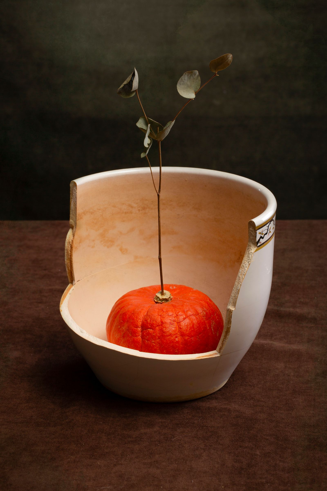
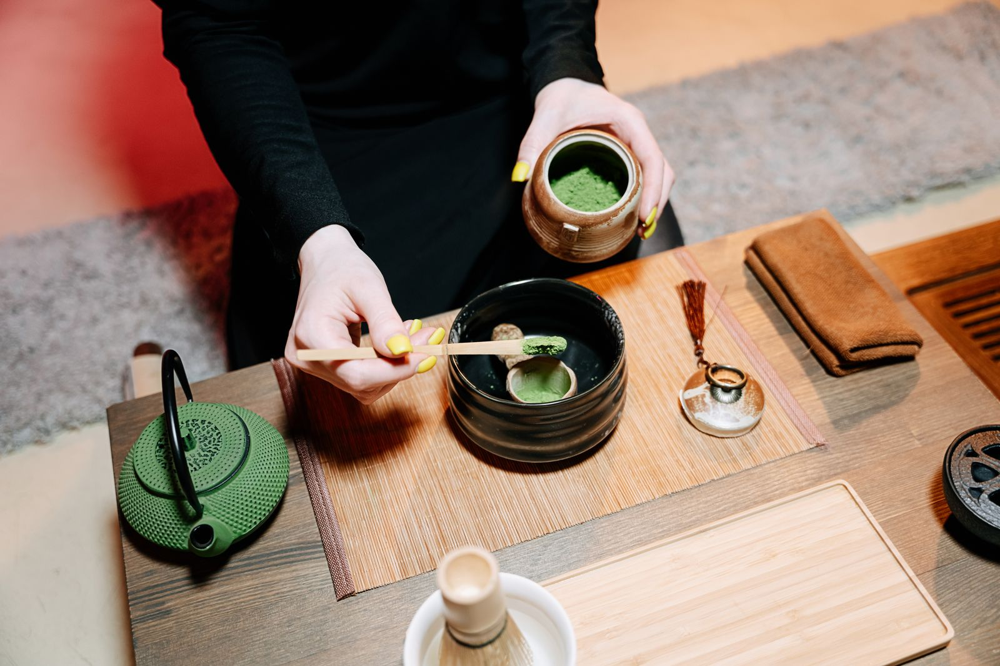
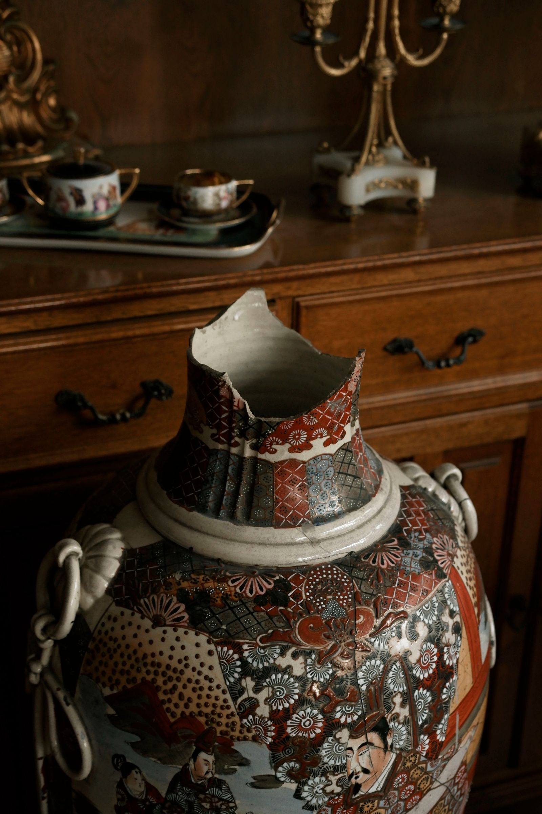
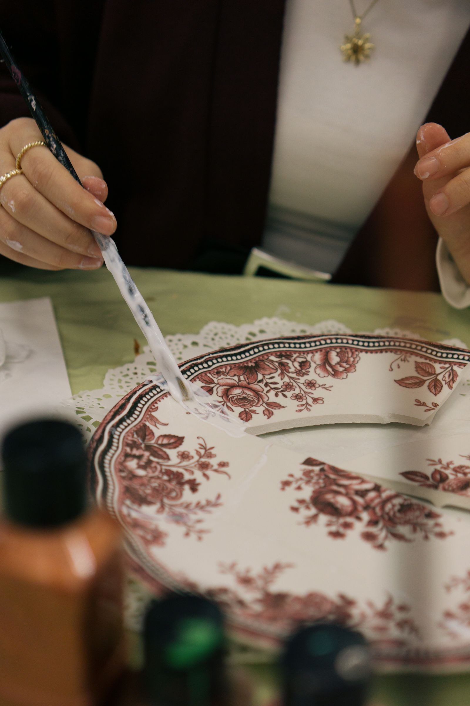
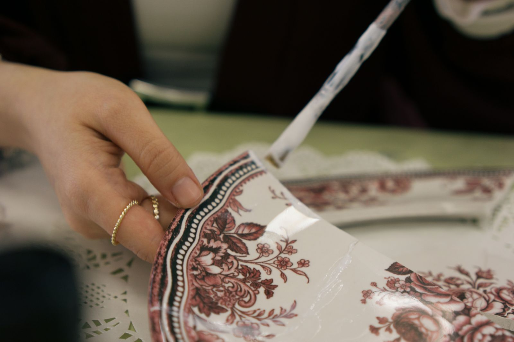

A portfolio of repair work is a record of other people's accidents. Each restoration below is written the way it was assessed: what arrived, what the lacquer had to do, and what state the piece went home in.

At intake. The chawan as it arrived — its wall broken away in three pieces, one rim chip missing entirely.

Before return. Matcha whisked at the studio bench — the bowl's first job after its final cure.
The Winter Chawan
PieceStoneware chawan, Ø 12.5 cm
The breakWall in 3 pieces, 1 rim chip lost
FinishKeshi-fun matte gold
On the bench8 weeks
The bowl belongs to a tea practitioner in Kyoto who bought it as a student and used it daily for eleven years. It fell from a shelf onto a stone floor in January. The wall came away in three clean pieces; a fourth fragment, from the rim, was swept up with the dust and never found.
Clean breaks are the kind repair. The difficulty here was the missing rim chip: a bowl is drunk from, and a rebuilt rim has to meet the lip comfortably, at the original curve, with nothing sharp and nothing proud.
Two joining sessions. Three shards cannot be held in alignment at once, so the wall went together in two sittings, each cured a week in the muro before the next began.
The rim rebuilt in sabi-urushi. The missing chip was modelled from lacquer and tonoko powder in four thin layers, each cut back against a template taken from the unbroken side of the rim.
Keshi-fun, chosen quietly. A bright gold would have shouted against the bowl's ash-grey glaze. The fine matte powder sits in the seam like a pencil line.
An extended final cure. Tea bowls meet near-boiling water. The finished piece rested a full extra fortnight before it was allowed back to work.
Outcome. The bowl is back in daily use. The owner writes that the seam has become the side she turns toward herself — the bowl's new front. Hand-washing only; the studio's care notes travel with every tea piece.

At intake. The vase as it arrived — the neck gone, and a hairline running down the body that the photograph barely shows.
The Kutani Vase
PieceKutani-style vase, 38 cm
The breakNeck in 9 pieces, hairline down body
FinishMaru-fun bright gold
On the bench10 weeks
This vase stood on a sideboard in the same house for forty years before a grandchild's football found it. The neck shattered into nine pieces, two of them slivers too small to recover. Less visible, and more serious: a hairline crack running from the shoulder halfway down the body, the kind that spreads a little further every time a piece is lifted by its rim.
The hairline was treated first. A crack that is still moving will take a finished seam with it, so the vase spent its first month simply being stabilised.
The hairline fed, not forced. Thinned ki-urushi was drawn into the crack by capillary action over several days, then cured hard before any other work touched the piece.
The neck rebuilt around a form. Nine shards were joined in a ring on a removable core that held the flare of the original neck while each seam cured.
Two slivers replaced. The missing fragments were rebuilt in sabi-urushi and left fractionally below the surface, so the gold line reads continuous without pretending the porcelain is whole.
Maru-fun, chosen loudly. Against enamel this busy, a matte seam would disappear. The round-grain gold holds a bright, unbroken line from shoulder to rim.
Outcome. The vase stands on the same sideboard. The studio's advice, accepted: flowers go in a glass liner rather than water in the vase itself, so the rebuilt neck never carries that weight and stress again.

On the bench. Sealing a seam on the broken plate — the rose transferware pattern had to continue across every join.

Checking a shard. Each fragment is held against its neighbours before lacquer; a plate that rocks on the table goes back a stage.
The Rose Plates
PieceRose transferware plate, Ø 26 cm
The break5 pieces, from a set of 12
FinishKeshi-fun matte gold
On the bench7 weeks
One plate from a dinner service of twelve, inherited from a grandmother in Bath and broken during a house move — the owner had kept the five pieces in a tea towel for two years, unsure whether repair was even a thing that existed for tableware. It is, and tableware is where this craft began: kintsugi grew up around treasured tea ware, then spread to the pieces a household actually eats from.
A patterned plate adds one demand an ash-glazed bowl does not: the printed roses must line up across every seam. A join half a millimetre out shows as a broken stem, and the eye goes straight to it.
Pattern-mapped before joining. The five shards were photographed and the transfer pattern traced across the breaks, so alignment could be checked against the drawing at every stage.
Joined in sequence, rim inward. The rim pieces went first — they carry the plate's circle — and the centre last, where a small error is least visible.
One seam re-cut. The first seating of the centre shard left a rose stem misaligned by a hair. The seam was opened, cleaned and re-joined rather than accepted. It cost a week in the muro; it was the right call.
Keshi-fun at table scale. A dinner plate is seen at arm's length, in warm light. The matte gold reads as a drawn line, in keeping with the printed pattern it crosses.
Outcome. The plate went home in time for Christmas and was eaten off at the head of the table. The owner's words about it are on the home page. The other eleven plates, she reports, are now handled with noticeably more respect.
Yours could be the fourth story here
It starts the same way all three of these did: photographs, a count of the breaks, and a written assessment with a fixed price.